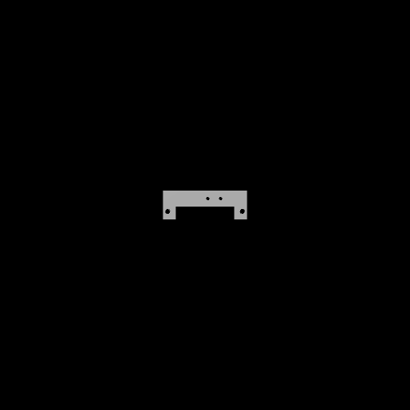

Halter_Netzteil
STL · 52,5 × 18 × 6 mm · Hilfsmittel
ÜbersichtDrucken7VerwendetVariantenDatei
DRUCKEN1
↗ Im Slicer öffnenModell slicen und von dort drucken
↻ Nochmal druckenmit ★ Halter_Netzteil_PLA… (zuletzt gut)
7× gedruckt · 4 gut · 1 mit Fehler · 2 abgebrochen · zuletzt heute
VERLAUF2＋ Druck nachtragen
Heute 10:42 · im Slicer geöffnetüber den Slicer
Wie ist es geworden?3
✓ gut⚠ mit Fehler✗ abgebr.nicht gedruckt
29.10.✓ gut★ …PLA_0.2_7m55s
↻ nochmal
PLA 2,6 g↓ Geeetech weiss · 0,06 €
28.10.✓ gut★ …PLA_0.2_7m55s4
↻ nochmal
PLA 2,6 g· ab hier mit G-Code
27.10.⚠ mit Fehlerüber den Slicer
↗ Slicer
„Warping an der Ecke, Bett 5 °C wärmer“
PLA
20.10.✗ abgebrochenüber den Slicer
↗ Slicer
Haftung, nach 2 min
3 ältere anzeigen · alle über den Slicer
G-CODES53

★ Halter_Netzteil_PLA_0.2_7m55s.gcodeaus dem Ordner
PLA · 0,2 mm · 7 min 55 s · 2,6 g · Kobra 3
2× gedruckt · 2 gut · eingelesen 25.10.
↻ DruckenEinstellungen⤓⋯
PETG
1029-0915-Halter_Netzteil_PETG_0.2_9m10s.gcodeaus dem Ordner
PETG · 0,2 mm · 9 min 10 s · 2,7 g · Kobra 3
noch nicht gedruckt6
↻ DruckenVergleichen mit ★⋯ entfernen
3MF
Halter_Netzteil.3mfProjekt, geslict
PLA · 0,2 mm · 2 Platten · 5,1 g
noch nicht gedruckt · Reicht das Filament? ✓
↗ Im SlicerEinstellungen⋯
＋ G-Code oder Projekt hinzufügen — oder hierher ziehen
Reiter „Drucken“ — Mock zum Besprechen
1Oben drucken. Zwei Wege: das Modell im Slicer öffnen (der normale Weg des Testers) oder einen vorhandenen, bewährten Druck nochmal — PartAtlas schlägt den ★-G-Code vor und öffnet genau diese Datei im Slicer oder legt sie zum Herunterladen bereit.
2Darunter der Verlauf des Modells, neueste zuerst — jeder Druck mit Ergebnis, womit gedruckt (G-Code oder „über den Slicer“), Filament, abgebuchte Spule, Foto, Notiz. Jede Zeile kann „nochmal“.
3Offener Eintrag. Wer über PartAtlas druckt, bekommt oben eine Zeile „Wie ist es geworden?“ — ein Klick bewertet. „Nicht gedruckt“ verwirft sie. So entsteht der Verlauf fast von selbst.
4Mit und ohne G-Code in einer Liste. Die fünf Drucke über den Slicer und die mit G-Code stehen zusammen; die Zahl oben stimmt immer.
5Unten die verfügbaren G-Codes und geslicten Projekte — eingelesen aus dem Ordner oder hineingezogen. Je Datei: Vorschaubild, Werte, wie oft gedruckt, ★ = der bewährte. Ein Klick auf die Zeile zeigt oben nur ihre Drucke.
6Lose G-Codes („noch nicht gedruckt“) bleiben, bis man sie druckt oder entfernt; die Datei im Ordner bleibt liegen.
Nicht im Mock: unklare G-Codes ohne passendes Modell (stehen unter Bereinigen), Platte mit mehreren Modellen, G-Code später vom Drucker holen.